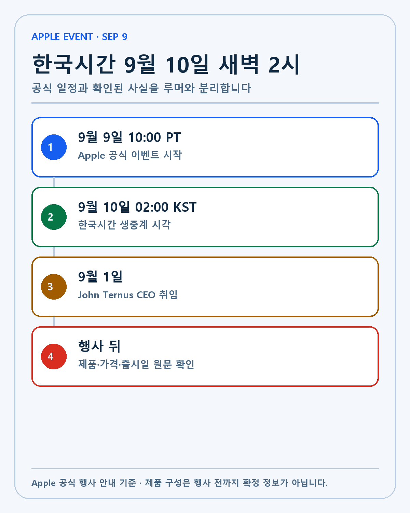
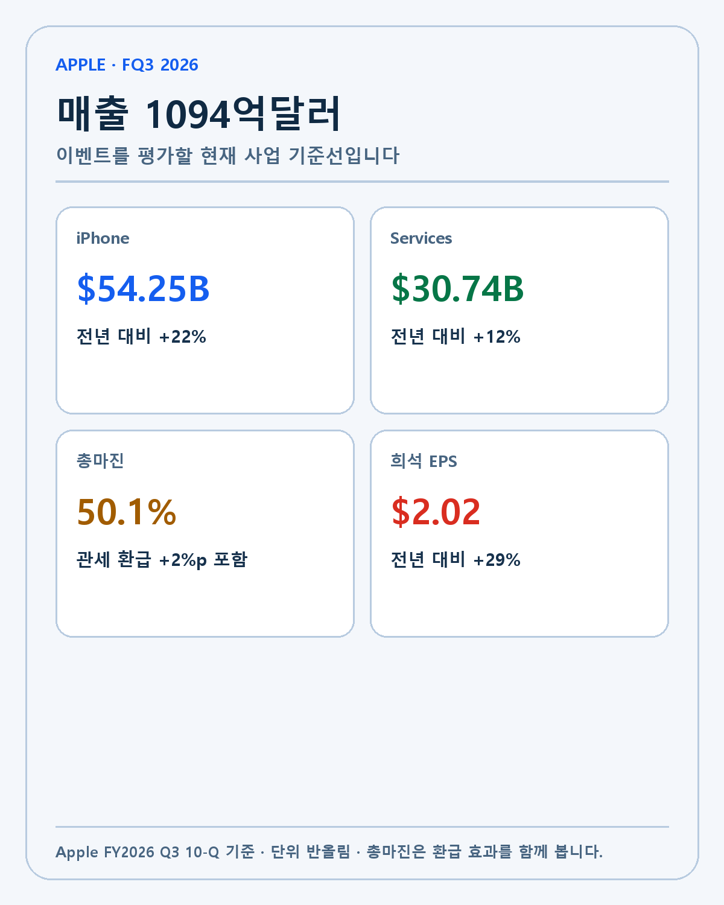
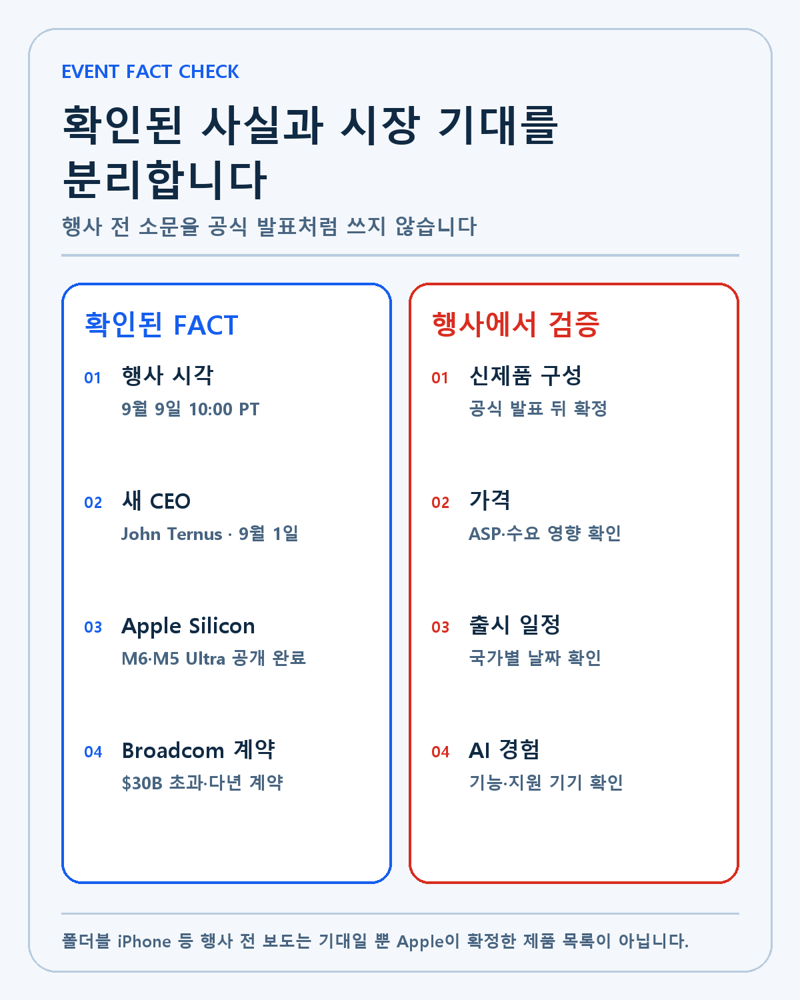
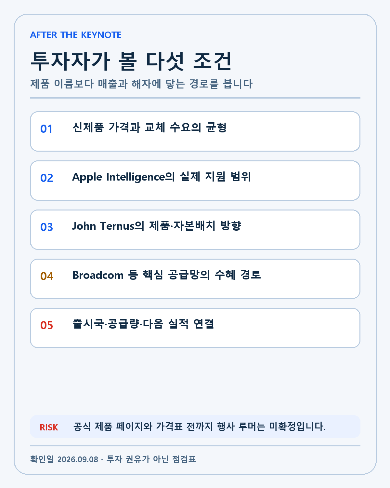

APPLE · DEEP RESEARCH
Apple 2026년 9월 이벤트 프리뷰: 새 CEO의 첫 무대와 온디바이스 AI 공급망
한국시간 9월 10일 새벽 2시 Apple Event를 새 CEO, iPhone 매출, 온디바이스 AI와 Broadcom 공급망의 다섯 조건으로 분석합니다.
Apple은 2026년 9월 9일 오전 10시 미국 태평양시간에 특별 행사를 엽니다. 한국시간은 9월 10일 오전 2시입니다. Apple Developer의 9월 행사 안내에는 날짜, 시작 시각, 시청 경로가 명시돼 있습니다. 제품 목록과 가격은 적혀 있지 않습니다. 행사 전까지 공개된 폴더블 iPhone, 특정 모델명, 저장용량과 가격 보도는 공식 정보와 분리해야 합니다.
이번 행사는 제품 교체 주기만 보는 평소의 9월 행사와 조건이 다릅니다. John Ternus가 9월 1일 CEO로 취임한 뒤 처음 치르는 대형 제품 발표입니다. Apple은 8월에 M6와 M5 Ultra를 먼저 내놓으며 온디바이스·데스크톱 AI 컴퓨팅의 방향을 제시했습니다. 7월에는 Broadcom과 300억달러를 넘는 미국산 칩 계약도 발표했습니다. 제품, 경영진, AI 칩, 공급망이 같은 시기에 겹쳤습니다.
투자자가 확인할 질문은 신제품의 이름이 아닙니다. Apple이 542억5200만달러의 분기 iPhone 매출을 더 키울 교체 이유를 만드는지, 307억3900만달러의 Services 매출과 AI 경험을 연결하는지, 새 CEO가 공급망 투자와 자본배치의 우선순위를 어떻게 설명하는지가 중요합니다. 이 글은 행사 전에 확인된 사실을 고정하고 행사 뒤 검증할 조건을 미리 정합니다.
다섯 줄 결론
첫째, 행사 시작 시각은 한국시간 9월 10일 오전 2시입니다. 둘째, John Ternus는 9월 1일 CEO로 취임했지만 이번 제품은 이전 체제부터 개발됐을 가능성이 커 한 번의 행사만으로 경영 성과를 판단할 수 없습니다. 셋째, Apple FY2026 3분기 매출 1094억1700만달러와 iPhone 매출 542억5200만달러가 행사 이후 비교할 기준선입니다. 넷째, M6·M5 Ultra와 Broadcom 계약은 Apple이 AI 연산과 연결 부품을 공급망 수준에서 묶고 있음을 보여 줍니다. 다섯째, 제품 구성·가격·출시국·AI 지원 범위는 공식 발표 뒤 확정해야 합니다.
행사 반응과 투자 판단을 나눠야 합니다. 발표 당일에는 제품과 기능을 기록하고, 다음 날에는 가격과 출시 일정을 대조합니다. 실제 사업 효과는 다음 분기 iPhone 매출, Services 성장, 총마진과 공급망 기업의 매출 인식에서 확인합니다.
공식 일정과 한국시간 계산
미국 태평양시간 오전 10시는 9월 기준 PDT, UTC-7입니다. 한국 표준시는 UTC+9입니다. 시차 16시간을 더하면 다음 날 오전 2시가 됩니다. 따라서 한국에서 생중계를 보려면 9월 10일 목요일 새벽 2시를 기준으로 잡아야 합니다.
| 단계 | 현지 시각 | 한국시간 | 확인 자료 |
|---|---|---|---|
| Apple Event 시작 | 9월 9일 10:00 PT | 9월 10일 02:00 | Apple 공식 생중계 |
| 제품 페이지 공개 | 행사 중·직후 | 9월 10일 새벽 | Apple 제품 페이지 |
| 가격·출시국 확인 | 행사 직후 | 9월 10일 이후 | 국가별 스토어 |
| 공급망 검증 | 다음 실적까지 | 분기 단위 | Apple·공급사 공시 |

날짜 계산보다 중요한 경계가 있습니다. 공식 일정은 검증됐지만 행사 내용은 아직 공개되지 않았습니다. 제품을 예상하는 보도는 검색 수요를 만들지만, 투자 장부에는 기대나 루머로 적어야 합니다. Apple이 무대에서 발표하고 제품 페이지에 사양을 올린 뒤에야 FACT가 됩니다.
John Ternus 체제의 첫 공개 시험
Apple의 4월 발표와 SEC 8-K는 John Ternus의 CEO·이사회 취임 효력일을 9월 1일로 명시합니다. Tim Cook은 Executive Chairman이 됐고 정책 당국과의 관계 등 일부 역할을 이어갑니다.
Ternus는 하드웨어 엔지니어링을 이끌어 온 경영자입니다. 그러나 취임 8일 뒤 열리는 행사의 제품을 전부 새 CEO의 결과로 보기는 어렵습니다. 스마트폰과 칩의 개발 주기는 여러 해입니다. 제품의 완성도는 이전 조직의 누적 결과이고, 새 CEO의 판단은 앞으로의 우선순위와 자본배치에서 드러납니다.
그래서 이번 무대에서는 세 가지 표현을 듣겠습니다. 첫째, 하드웨어와 소프트웨어, 서비스를 어떤 순서로 묶는지 봅니다. 둘째, AI를 사용자의 실제 작업과 연결하는 구체적인 기능·지원 기기·출시 시점을 확인합니다. 셋째, 미국 생산과 핵심 공급사를 제품 경쟁력의 일부로 설명하는지 기록합니다.
반대 논리도 있습니다. 제품 회사의 강점은 한 사람보다 설계·운영 체계에서 나옵니다. CEO가 바뀌어도 Apple의 기능 조직, 제품 검토, 공급망 협상과 서비스 운영은 이어집니다. 경영진 교체를 곧바로 전략 단절로 읽는 것도 과도합니다. 이번 행사는 방향을 읽는 첫 자료이지 최종 판정이 아닙니다.
FY2026 3분기가 만든 사업 기준선
Apple의 FY2026 3분기 10-Q는 매출 1094억1700만달러, 순이익 297억8900만달러, 희석 EPS 2.02달러를 기록했습니다. 전년 동기 매출 940억3600만달러와 비교하면 16% 성장입니다.
제품군별로 iPhone은 542억5200만달러, Mac은 103억5200만달러, iPad는 61억9100만달러, Wearables·Home·Accessories는 78억8300만달러였습니다. Services는 307억3900만달러입니다. iPhone은 전년 동기보다 22%, Mac은 29%, Services는 12% 늘었고 iPad는 6% 줄었습니다.
| FY2026 Q3 | 매출 | 전년 동기 | 변화 |
|---|---|---|---|
| 전체 | $109.417B | $94.036B | +16% |
| iPhone | $54.252B | $44.582B | +22% |
| Mac | $10.352B | $8.046B | +29% |
| Services | $30.739B | $27.423B | +12% |
| iPad | $6.191B | $6.581B | -6% |

이 표는 신제품의 기대치를 정합니다. iPhone 매출은 이미 높은 기준선에서 출발합니다. 새 모델이 많이 팔려도 가격 인상과 제품 믹스에 따라 매출과 판매량의 방향이 다를 수 있습니다. 교체 수요가 강해 보이더라도 출시국이 제한되거나 공급이 부족하면 분기 매출 인식이 늦어질 수 있습니다.
Services는 설치 기반의 질을 보여 줍니다. AI 기능이 기기 안에서만 끝나지 않고 앱, 클라우드, 결제와 구독 사용을 늘리면 하드웨어 판매와 반복 매출이 연결됩니다. 지원 국가와 언어가 좁거나 핵심 기능 출시가 늦으면 같은 연결이 약해집니다.
총마진 50.1%를 그대로 정상화하면 안 되는 이유
Apple은 FY2026 3분기 총마진이 50.1%였다고 밝혔습니다. 여기에는 관세 환급이 약 2%포인트 긍정적으로 작용했습니다. 희석 EPS 2.02달러에도 환급 효과 0.11달러가 포함됐습니다. 숫자가 높다는 사실과 반복 가능한 수익성은 다른 질문입니다.
신제품 주기의 총마진은 평균판매가격, 부품 가격, 생산 수율, 메모리·디스플레이 비용, 환율과 관세의 영향을 받습니다. Apple이 높은 가격을 유지하고도 판매량을 지키면 제품 믹스가 마진을 받칩니다. 반대로 AI 기능을 위한 메모리와 고급 부품이 늘고 소비자가 가격 인상을 받아들이지 않으면 마진이나 판매량 한쪽이 압박받습니다.
관세 환급을 제외한 단순 조정 총마진을 회사가 별도 GAAP 지표로 제시한 것은 아닙니다. 50.1%에서 2%포인트를 기계적으로 빼 정확한 정상 마진이라고 부르지 않겠습니다. 이 글은 환급 효과가 포함됐다는 사실만 경계로 둡니다.
Apple Silicon이 만든 온디바이스 AI 기준
Apple은 8월 25일 M6와 M5 Ultra를 공개했습니다. M6는 Apple의 첫 2나노미터 칩이며 12코어 CPU, 12코어 GPU, Dual 16-core Neural Engine을 갖습니다. M5 Ultra는 최대 36코어 CPU, 80코어 GPU, 512GB 통합 메모리와 1.2TB/s 대역폭을 지원합니다.
이 수치는 데스크톱 제품 사양입니다. 9월 모바일 행사에 그대로 적용된다는 뜻은 아닙니다. 다만 Apple이 AI를 다루는 방식을 보여 줍니다. CPU·GPU·Neural Engine·통합 메모리·개발 프레임워크를 하나의 시스템으로 묶고, 모델을 기기에서 실행하는 경험을 강조합니다.
모바일에서도 확인할 항목은 비슷합니다. 칩의 연산 성능보다 실제 AI 작업의 지연시간, 전력효율, 메모리 요구량, 개인정보 처리 방식이 중요합니다. 기능이 일부 고급 모델에만 제한되면 교체 수요에는 긍정적일 수 있지만 설치 기반 전체의 서비스 확산은 느려집니다. 구형 제품까지 넓게 지원하면 사용자는 늘지만 새 하드웨어의 차별화는 약해질 수 있습니다.
Broadcom 계약이 보여 주는 공급망 해자
Apple과 Broadcom의 7월 계약은 300억달러를 넘는 다년 약정입니다. Apple은 150억개가 넘는 미국산 칩 생산을 예상했고 Broadcom은 Colorado Fort Collins 시설에 15억달러를 투자할 계획입니다. 대상에는 FBAR 필터를 포함한 RF 부품과 무선 연결 기술이 들어갑니다.
Broadcom의 관련 SEC 8-K는 2031년까지 여러 세대의 Apple 제품에 쓰일 맞춤형 ASIC 실리콘 개발·공급 계약을 설명합니다. 계약 규모를 한 분기 매출로 인식하는 구조가 아닙니다. 설계, 생산, 제품 출시와 납품에 따라 여러 해 동안 매출로 바뀝니다.

Broadcom 보유자에게 확인할 것은 계약 제목보다 전환 속도입니다. Apple의 새로운 제품이 더 복잡한 연결 기능과 맞춤형 실리콘을 요구하는지, Fort Collins 투자가 수율과 생산능력으로 이어지는지, 고객 집중이 장기 계약의 안정성보다 큰 위험인지 봐야 합니다.
Apple에는 공급망 통제가 제품 해자의 일부입니다. 핵심 부품을 장기 계약으로 확보하면 세대별 제품 설계를 안정시키고 미국 생산 요구에 대응할 수 있습니다. 반대로 특정 공급사와 지역에 대규모 투자를 묶으면 기술 전환이나 수요 변화에 대한 유연성이 줄 수 있습니다.
행사에서 사실로 바뀌어야 할 항목
행사 전에 확인된 것은 일정, CEO 전환, 최근 실적, M6·M5 Ultra, Broadcom 계약입니다. 신제품의 이름과 디자인, 가격, 출시일, 지원 국가, Apple Intelligence 기능은 발표 뒤 확인해야 합니다.
- 공식 제품 페이지에서 모델명과 저장용량별 가격을 확인합니다.
- Apple Intelligence 기능이 어느 칩과 기기, 언어, 국가에서 작동하는지 기록합니다.
- 신제품의 메모리·연결·전력 사양이 공급망 수요를 어떻게 바꾸는지 봅니다.
- 선주문과 출시일, 국가별 물량이 분기 매출 인식에 맞는지 확인합니다.
- John Ternus가 제품과 서비스, 미국 생산, 자본배치를 어떤 장기 문장으로 묶는지 남깁니다.

폴더블 iPhone이 발표될 것이라는 보도는 현재 시장 기대입니다. 발표되지 않으면 Apple이 계획을 포기했다고 단정할 수 없습니다. 발표돼도 판매량과 수율, 가격, 앱 적응이 확인되기 전에는 사업 성공으로 볼 수 없습니다. 기대와 공식 발표, 출하, 매출을 네 단계로 분리합니다.
강세·기준·약세 시나리오
강세 시나리오는 높은 가격을 정당화할 제품 경험과 AI 기능이 확인되고 출시 국가와 물량이 넓은 경우입니다. Apple Intelligence가 기기 교체뿐 아니라 Services 사용 빈도를 높이고, Broadcom을 포함한 공급망 투자도 제품 세대와 함께 늘어난다면 하드웨어와 반복 매출의 결합이 강해집니다.
기준 시나리오는 제품이 완성도 높게 공개되지만 시장이 이미 기대한 범위에 머무는 경우입니다. 행사 직후 주가보다 다음 분기의 iPhone 매출, 평균판매가격, Services 성장, 총마진을 기다립니다. 새 CEO의 방향은 한 번의 기조연설보다 다음 몇 분기의 제품·자본배치에서 판단합니다.
약세 시나리오는 가격 부담과 제한된 AI 지원이 교체 수요를 낮추거나, 공급 부족 때문에 출시국·물량이 좁아지는 경우입니다. 부품 비용이 오르고 관세 환급 같은 일회성 효과가 사라지면 높은 매출 성장에도 총마진이 약해질 수 있습니다.
투자 가설의 무효화 조건은 행사 당일의 실망이 아닙니다. 제품 차별화가 여러 세대에 걸쳐 약해지고 설치 기반의 Services 성장도 둔화하며, 높은 공급망 투자가 판매량과 현금흐름으로 이어지지 않을 때 기대를 낮춥니다. Broadcom에는 Apple 관련 투자와 생산이 장기 매출로 전환되지 않거나 고객 집중 위험이 커지는지가 별도 무효화 조건입니다.
내 투자 포트폴리오에 닿는 경로
Apple은 현재 제 핵심 보유종목 목록에 없지만 행사는 포트폴리오의 반도체 축과 연결됩니다. Broadcom은 무선·맞춤형 실리콘 계약의 직접 당사자입니다. 마이크론은 모바일 메모리와 온디바이스 AI의 탑재량 변화에 영향을 받을 수 있습니다. 엔비디아는 클라우드 AI와 대조되는 온디바이스 연산의 범위를 보여 주는 비교 기준입니다.
연결된 산업을 본다는 것은 모든 발표를 보유종목 호재로 바꾸는 일이 아닙니다. 제품 사양이 실제 부품 수요를 늘리는지, 공급사가 그 물량을 받을지, 원가와 투자 부담 뒤에 현금이 남는지 순서대로 확인해야 합니다.
저는 기술, 해자, 창업자와 경영진, 성장률, 현금흐름의 순서로 기업을 봅니다. 이번 Apple Event에서는 기술과 새 경영진의 설명을 먼저 듣습니다. 성장률과 현금흐름은 다음 실적에서 검증합니다. 행사 무대와 투자 장부의 시간을 분리하면 루머에 휘둘리지 않고 공급망의 실제 변화를 남길 수 있습니다.
발표 뒤 복기 계획
행사 직후에는 제품·가격·지원 기기·출시일을 공식 페이지에서 고정합니다. D+1에는 행사 전 기대와 실제 발표를 비교합니다. D+7에는 선주문, 공급 기간과 국가별 출시 상태를 확인합니다. 다음 분기 실적에서는 iPhone·Services 매출, 총마진과 재고를 봅니다.
Broadcom은 Apple 계약 관련 매출과 Fort Collins 투자 진행을 후속 공시에서 추적합니다. 제품 사양만 보고 공급사 매출을 계산하지 않습니다. 마이크론도 메모리 탑재량이 공식 사양이나 분해 자료로 확인되기 전에는 수혜 규모를 단정하지 않습니다.
주가 반응과 사업 변화를 분리하는 방법
행사 다음 거래일의 Apple 주가가 오르거나 내리는 것은 관찰 가능한 사실입니다. 원인은 하나가 아닙니다. 제품 발표, 행사 전 기대 수준, 같은 날의 금리와 지수, 포지셔닝, 애널리스트 추정치가 동시에 영향을 줄 수 있습니다. 따라서 가격 반응을 행사 품질의 점수로 바로 사용하지 않겠습니다.
먼저 Apple 주가와 Nasdaq, 미국 10년물 금리의 방향을 같은 시간축에 놓습니다. 다음으로 행사 뒤 iPhone 판매량·평균판매가격과 Services 매출 추정치가 실제로 바뀌었는지 봅니다. 공급망 종목은 Apple 발표에 직접 언급됐는지, 기존 계약과 사양이 새 제품에 연결됐는지 확인합니다.
Broadcom 주가가 같이 올랐다고 해서 300억달러 계약의 당기 매출이 늘었다고 볼 수 없습니다. 계약은 이미 7월에 발표됐고 다년간 집행됩니다. 새로운 제품 세대가 어떤 부품을 얼마나 채택하는지, Broadcom이 관련 매출을 어느 분기부터 인식하는지는 후속 공시가 필요합니다.
마이크론과 메모리 공급사도 같습니다. 온디바이스 AI가 고용량 메모리를 필요로 한다는 산업 논리와 특정 iPhone 모델의 실제 탑재량은 다른 증거입니다. 공식 사양, 공급망 공시, 분해 자료가 나오기 전에는 수혜 방향만 가설로 두고 금액을 계산하지 않습니다.
행사 전 남아 있는 UNKNOWN
9월 8일 현재 공식 행사 안내만으로는 신제품의 전체 구성, 가격, 국가별 출시일, Apple Intelligence의 지원 언어와 기기 범위를 알 수 없습니다. 폴더블 제품이 발표되는지, 새로운 폼팩터의 초기 생산량과 수율이 얼마인지도 확인되지 않았습니다.
Apple이 새 CEO 체제에서 자본배치 정책을 바꿀지도 UNKNOWN입니다. Ternus가 하드웨어 엔지니어 출신이라는 사실은 제품 투자를 중시할 가능성을 생각하게 하지만, 실제 R&D·CAPEX·자사주 매입·배당 정책은 이사회 결정과 공시로 확인해야 합니다.
Broadcom 계약의 연도별 매출 인식, 제품군별 부품 수와 마진도 공개되지 않았습니다. 계약 총액을 5년으로 단순 나눈 값이나 Apple 제품 판매량에 임의 단가를 곱한 값은 공식 전망이 아닙니다. 확인되지 않은 숫자는 투자 모델의 입력으로 쓰지 않습니다.
이 UNKNOWN 목록은 빈칸이 아니라 후속 조사 계획입니다. 행사 뒤 공식 페이지, Apple의 다음 10-Q, Broadcom 실적과 공급망 공시가 나오면 하나씩 FACT로 바꿉니다. 끝까지 공개되지 않는 계약 세부사항은 UNKNOWN으로 남깁니다.
이 글은 2026년 9월 8일 기준 공식 자료로 작성한 개인 투자 연구입니다. 특정 종목의 매수·매도를 권유하지 않습니다. 행사 전 제품 보도와 회사의 미래 계획은 실제 발표·출하·실적과 다를 수 있으며 투자 판단과 책임은 투자자 본인에게 있습니다.
작성 방법
2026년 9월 8일 기준 공식 자료와 공시를 우선하고 실제·회사 전망·시나리오·UNKNOWN을 분리했습니다.
개인 투자 기록이며 특정 종목의 매수·매도를 권유하지 않습니다.